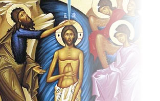

Pastor:
Father Andrew Welzig
Send Email
Email Fr. Andrew

Menu
Home
Calendar
Services
Parish Life
Contact Us
Pastor:
Father Andrew Welzig
Send Email
Church Calendar
Weekly Services
Service
Time
Sunday
Orthros
9:00 a.m.
Divine Liturgy
10:00 a.m.
Monday
Tuesday
Wednesday
Paraklesis
6:30 p.m.
Thursday
Friday
Vespers, Litia, Artoklasia
6:30 p.m.
Saturday
9th Hour & Vespers
6:00 p.m.